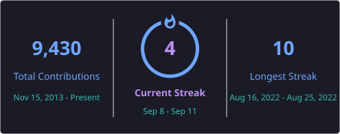

Rodrigo Kellermann
DevOps Engineer / Site Reliability Engineer (SRE)
About Me
Welcome to my GitHub page! I'm a passionate devops/sre engineer who loves building innovative solutions and contributing to open-source projects. I enjoy tackling complex problems and continuously learning new technologies.
Feel free to explore my repositories and contributions below. I'm always open to collaboration and new opportunities!
Certifications & Verified Badges
Loading certifications...
View Profile on CredlyGitHub Statistics


Contribution Activity

External Repository Contributions
Loading contributions data...